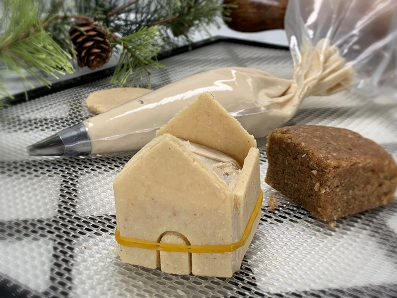
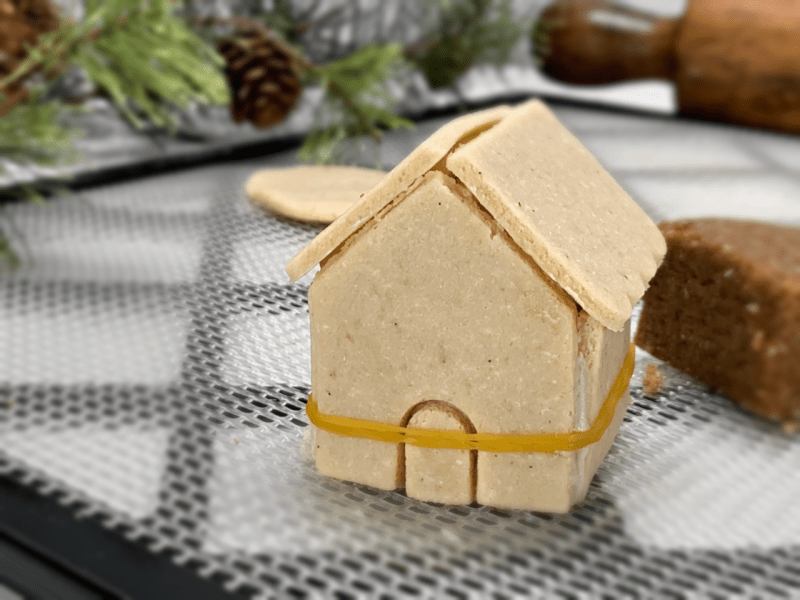

Sugar Cookie Tiny Homes
Ready for some big-time fun? Get the family together to build and decorate these raw sugar cookie tiny houses! Tiny homes are all the rage these days. They’re small, compact, and more affordable. The same is true for edible houses. I have been making these little homes for the past few Christmases but never got around to sharing them with you. And once again… I am a little late in getting this idea out. For that, I am sorry. But do know that these little houses aren’t just meant for Christmas. They can be made and enjoyed year-round!
Tiny Homes Filled with Big Ideas
These little houses couldn’t be more adorable if you ask me. If you were to open the front door, you would find a mini raw cake inside! So not only do you get the enjoyment of eating the walls and roof… but also a few delicious bites of cake! You can select any raw cake recipe that you want to use. For some ideas, click (here). The treat inside not only adds an element of surprise but also gives structure to the little houses. There is also a layer of frosting that acts as a “glue” to help the walls stay in place.
I had such joy in my heart when I made these tiny homes. They may be little in size, but they are HUGE in charm. Feel free to decorate them any way you desire. I kept these simple, making sure not to distract from all the character they have. So grab the family, put on some fun toe-tapping music, and build these joyful little homes. Please comment below and have a blessed day, amie sue
 Ingredients:
Ingredients:
Yields: 24+ cookies
- 2 cups fine almond flour
- 1/3 cup coconut flakes, powdered
- 1/4 tsp Himalayan pink salt
- 1/3 cup maple syrup
- 1/2 vanilla bean, seeds only
- 1/2 tsp almond extract
Preparation:
- In a food processor, fitted with the “S” blade, combine the almond flour, powdered coconut, and salt. Blitz together.
- Make sure the flour is as fine as possible.
- You can use almond flour made from white almond pulp, or you can use commercially made (not raw).
- Add sweetener, vanilla bean seeds, and almond extract. Process until it starts sticking together and forms a ball.
- Line your surface with plastic wrap and place the dough ball in the center.
- Cover with another piece of plastic, then start to roll the dough out to about 1/4″ thick.
- Remove the top plastic piece and using cookie cutters, cut out your shape(s) and transfer them to the mesh sheet that comes along with your dehydrator.
- Avoid cookie cutters that have fine details on them because the dough can be sticky and not come out of the cookie cutter all that well.
- Dipping the cookie cutter edges in melted coconut oil can help with removing the cookie dough from the cookie cutter.
- I used (this) cookie cutter for my houses.
- Dry at 145 degrees (F) for 1 hour, then reduce to 115 degrees (F) for roughly 10-16 hours or until desired dryness is reached.
- Store in an airtight container. They will get sticky if you place them in the fridge.
Construction
- To help give the tiny homes a solid foundation, I made a batch of raw cake batter. You can use any flavor that you want.
- I created small cubes that fit perfectly within the walls of the tiny home.
- Frost the mini cakes and press the sides of the house into the frosting. The frosting will act as a glue to help hold it together.
- I put a rubber band around the whole house while the frosting set up. See photo below.
- Run a bead of frosting on the top edges of the walls to secure the roof pieces.
- Feel free to decorate the outside of your tiny homes however you wish. I wanted to keep mine simple and elegant.
- I don’t recommend putting them in the fridge as the cookie structure will get tacky and will soften.
- Enjoy!
Culinary Explanations:
- Why do I start the dehydrator at 145 degrees (F)? Click (here) to learn the reason behind this.
- When working with fresh ingredients, it is important to taste test as you build a recipe. Learn why (here).
- Don’t own a dehydrator? Learn how to use your oven (here). I do however fully believe that it is a worthwhile investment. Click (here) to learn what I use.


© AmieSue.com